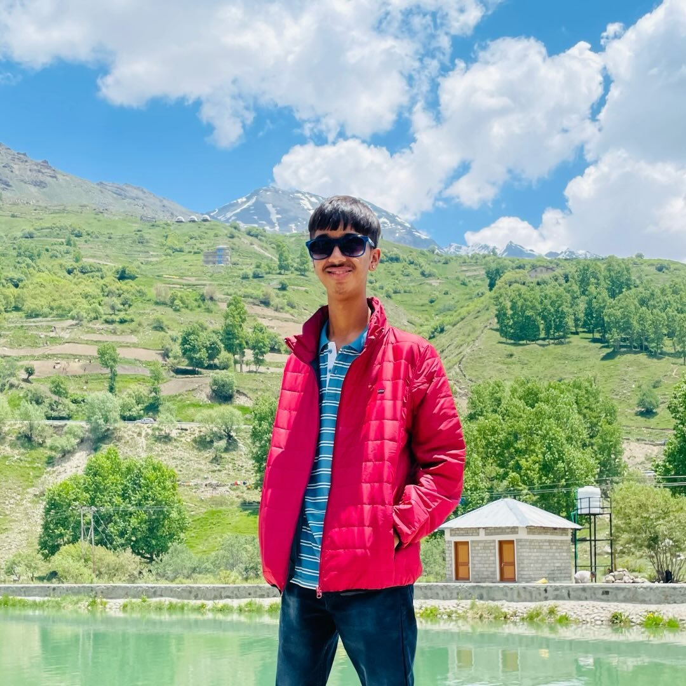

About Me
I enjoy learning by building things and understanding how they work behind the scenes.
I’m currently pursuing a Bachelor of Computer Applications (BCA) and exploring web development, backend systems, and security fundamentals. I like working on projects that involve logic, clean design, and problem-solving.
Through hands-on projects, I’ve worked with Python, web technologies, databases, and automation tools, and I’m continuously improving by experimenting and building real solutions.
“I believe simple, well-thought-out solutions matter more than complicated ones.”
Education
Bachelor of Computer Applications - Information Technology
Symbiosis Institute of Computer Studies and Research, Pune(MH), India
Pursuing BCA with focus on programming, backend development, databases, and security fundamentals.
Commerce with IP - CBSE Board
Ekayanaa School, Indore(MP), India